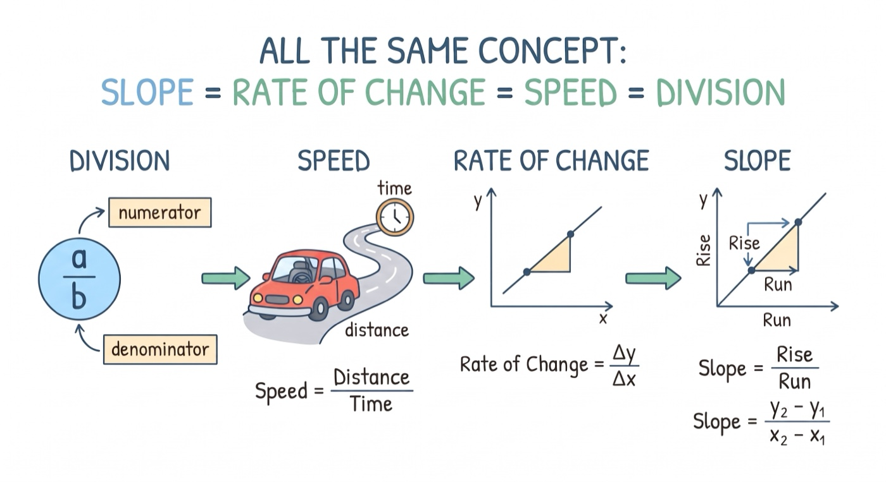
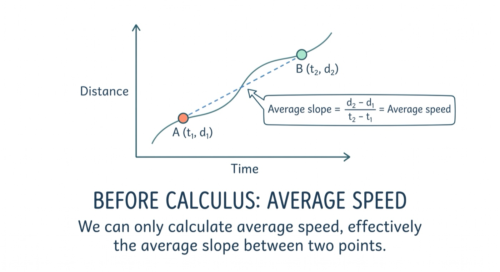
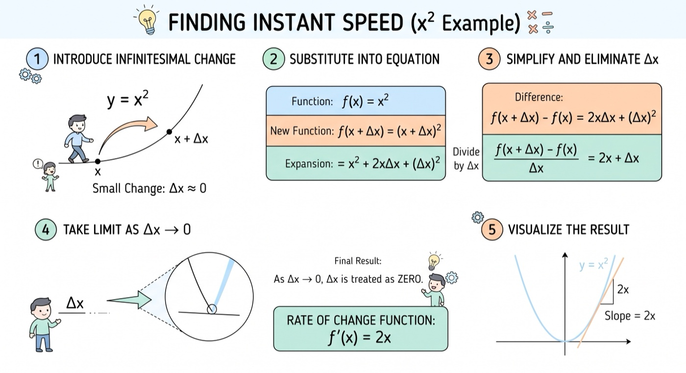
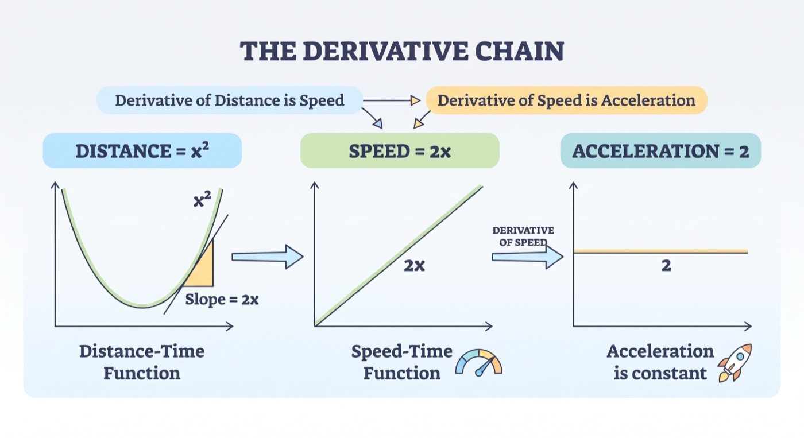
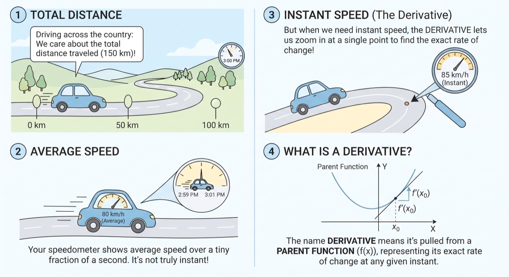

What is Derivative | Sailin' N Voyages Series, Ep. 5
What is Derivative
1 In this context, the following things are the same: Division is a over b. Speed is distant over time. Rate of change is delta y over delta x. Rate of change is also called slope.
2 Before calculus, we can only calculate average speed, effectively the average slope between two points.
3 Now, we can find the instant speed at an exact point, by first introducing the idea of an infinite small x and sub it into an equation, then try to eliminate it through changing the form of the equation and isolate x. Once isolated, x is simply treated as zero, while we have a new function. This new function is in fact the rate of change of the previous function.
4 If we have used the distance-time function x^2 to do the transformation, then we’d get the speed-time function 2x. It means that, for the function x^2, the slope or rate of change at any point is 2x. We call it the derivative of distance is speed. By the way, the derivative of speed is acceleration.
5 When we drive a car around the country, mostly we care about the distance traveled, not the speed at any instant. The reading on your speedometer is actually an average speed over a fraction of a second, not really instant speed. But when we do need to know the instant speed, derivative lets you zoom in at a point and get the value. The name derivative is derived or pulled from a parent function, representing its rate of change.